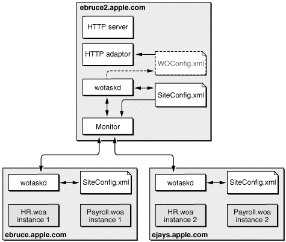

| PATH |

You use Monitor to configure your site. With it you configure hosts, applications, and application instances. You also define schedules for restarting instances and choose the algorithm used to balance the user load among the instances of an application. For details on the tasks that you can perform using Monitor, see "Deployment Tasks".
The SiteConfig.xml file,
which is maintained on each host's deployment-configuration directory
by wotaskd, stores the configuration choices you make in Monitor.
You should not modify the contents of this file directly. The user
under which wotaskd runs must have read and write privileges to SiteConfig.xml and
the user under which Monitor runs must have read privileges.
You can create another configuration file (the HTTP adaptor
configuration file), which is called WOConfig.xml by
default. This is the file the HTTP adaptor uses to obtain your site's configuration
when you choose the configuration file method for the adaptor.
Figure 5-1 shows how the configuration files are distributed in a deployment with one HTTP server and two application hosts. For information on how to generate the HTTP adaptor configuration file, see "Creating the HTTP Adaptor Configuration File".
Figure 5-1 WebObjects configuration-file distribution
Monitor reads the SiteConfig.xml file
when it starts up but never writes to it. wotaskd writes the SiteConfig.xml file
when instructed by Monitor to do so—such as when existing entities
are configured, added, or deleted. Furthermore, Monitor tells wotaskd
to update the SiteConfig.xml file
only when you use it to change an aspect of your site's configuration.